정보통신산업기사 (2019-09-26 기출문제)
1과목: 디지털전자회로
1. 다음 중 전원 정류회로의 리플 함유율을 적게 하는 방법으로 틀린 것은?
- 출력측 평활형 콘덴서의 정전용량을 작게 한다.
- 평활형 초크 코일의 인덕턴스를 크게 한다.
- 입력측 평활형 콘덴서의 정전용량을 크게 한다.
- 교류입력전원의 주파수를 높게 한다.
(정답률: 60%)

2. 다음 중 정류기의 평활회로에 사용되지 않는 것은?
- 콘덴서
- 저항
- 초크 코일
- 다이오드
(정답률: 69%)
3. 다음 3단자 전압 레귤레이터 IC회로에서 직류 출력전압을 조절할 수 있는 파라미터가 아닌 것은? (단, Vreg=1.25[V], IR1=5[mA], IADJ=100[μA]이다.)
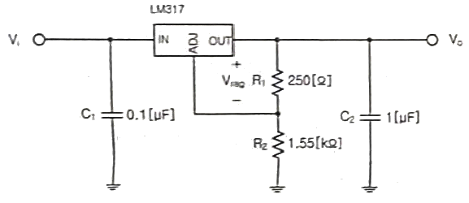
- R1
- R2
- C2
- Vreg
(정답률: 60%)
4. 다음 중 저주파에서 고주파에 이르기까지 일정한 스펙트럼을 갖고 나타나는 잡음으로 알맞은 것은?
- 트랜지스터 잡음
- 자연잡음
- 백색잡음
- 지터잡음
(정답률: 79%)
5. 다음 중 NPN 트랜지스터가 활성영역에서 동작한다고 할 때 바이어스 설명으로 옳은 것은?
- B-C는 순방향, B-E는 역방향으로 공급한다.
- B-C는 역방향, B-E는 순방향으로 공급한다.
- B-C는 순방향, B-E는 순반향으로 공급한다.
- B-C는 역방향, B-E는 역방향으로 공급한다.
(정답률: 64%)
6. 다음 그림은 베이스 바이어스 회로이다. 동작점에서 VCE전압은? (단, 베이스에미터 전압 VBE=0.7[V]이다.)
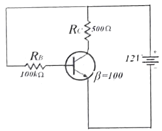
- 2.25[V]
- 6.35[V]
- 11.3[V]
- 12.0[V]
(정답률: 54%)
7. 차등증폭기의 두 입력전압에 각각 v1=7[mV], v2=5[mV]가 인가되었다. 차동전압 이득이 150이고 동상이득이 0.5일 때 출력전압은?(오류 신고가 접수된 문제입니다. 반드시 정답과 해설을 확인하시기 바랍니다.)
- 301[mV]
- 306[mV]
- 1,801[mV]
- 1,806[mV]
(정답률: 50%)
8. 다음 중 지속적인 출력을 내기 위한 발진기에 이용하는 원리는?
- 정궤환
- 부궤환
- 홀 효과
- 펠티에 효과
(정답률: 74%)
9. 다음 발진기에서 자가 발진을 위한 전압이득 Av의 조건은?
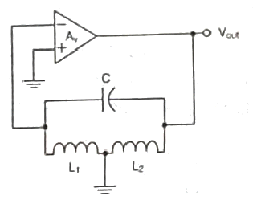
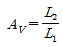
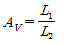
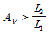
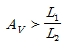
(정답률: 64%)
10. 다음 그림과 같은 윈 브리지(Wien Bridge) 발진기에서 제너 다이오드의 역할은 무엇인가?
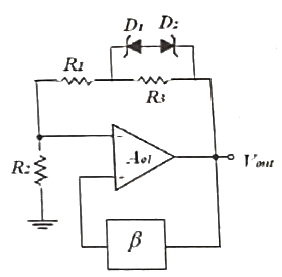
- 발진기의 출력전압을 제어하기 위한 것이다.
- 발진기의 초기시동을 위한 조건을 만든다.
- 페루프 이득이 1이 되도록 한다.
- 궤환신호의 위상이 입력위상과 동상이 되도록 한다.
(정답률: 55%)
11. 900[kHz]의 반송파를 5[kHz]의 신호주파수로 진폭 변조한 경우 피변조파에 나타나는 주파수 성분이 아닌 것은?
- 895[kHz]
- 900[kHz]
- 9⑤[kHz]
- 910[kHz]
(정답률: 79%)
12. AM 변조방식에서 변조도에 대한 설명으로 틀린 것은?
- 신호파의 최대값을 반송파의 최대값으로 나눈 값이다.
- 반송파의 크기와 신호파의 크기에 따라 정해진다.
- 최대주파수편이와 신호주파수와의 비이다.
- 진폭변화의 정도를 나타낸다.
(정답률: 65%)
13. 다음의 파형은 디지털 변조 방식의 파형이다. 어느 방식의 파형인가?
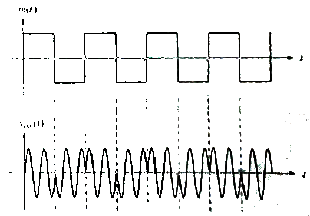
- ASK
- FSK
- PSK
- QAM
(정답률: 70%)
14. PCM 통신 방식에서 송신 과정으로 맞는 것은?
- 표본화 → 부호화 → 양자화 → 압축
- 표본화 → 양자화 → 부호화 → 압축
- 표본화 → 부호화 → 압축 → 부호화
- 표본화 → 압축 → 양자화 → 부호화
(정답률: 70%)
15. 다음 중 플립플롭(Flip-Flop)과 같은 동작을 하는 회로는?
- LC 발진기
- 수정 발진기
- 쌍안정 멀티바이브레이터
- 단안정 멀티바이브레이터
(정답률: 74%)
16. 다음 회로에서 입력되는 정현파의 최대 진폭이 6[V]일 때 출력에 나타나는 최대 진폭은? (단, RS=200[Ω], RL=400[Ω]이다.)
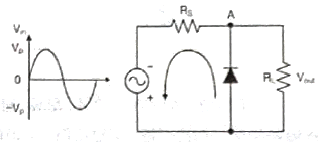
- 2[V]
- 4[V]
- 6[V]
- 8[V]
(정답률: 71%)
17. 다음 진리표를 간략화한 것으로 가장 적합한 논리회로는?
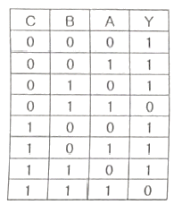
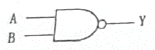
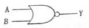
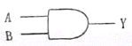
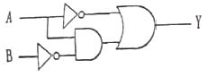
(정답률: 66%)
18. 다음 그림의 회로에 해당하는 논리기호는? (단, 정논리이다.)
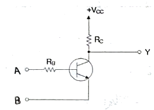
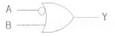
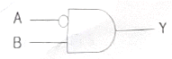
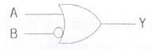
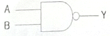
(정답률: 58%)
19. 다음 중 링 카운터에 대한 설명으로 틀린 것은?
- 클럭 신호를 받을 때 마다 상태가 하나씩 다음으로 이동한 카운터이다.
- 각각의 상태마다 한 개의 플립플롭을 사용하는 카운터이다.
- 디코딩게이트를 사용해야만 디코딩할 수 있다.
- 시프트 레지스터의 마지막 단 출력을 첫 단에 궤환시킨다.
(정답률: 62%)
20. 다음 그림과 같이 2n개(0~7)의 10진수 입력을 넣었을 때, 출력이 2진수(000~111)로 나오는 회로의 명칭은?
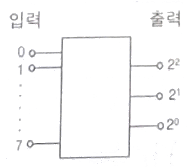
- 디코더 회로
- A-D 변환회로
- D-A 변환회로
- 인코더 회로
(정답률: 64%)
2과목: 정보통신기기
21. 정보 단말기의 기능 중 통신 장비 간의 약속된 부호를 송수신하여 에러 검출 및 정정하는 기능은?
- 입·출력 제어 기능
- 다중화 제어 기능
- 송·수신 제어 기능
- 에러 제어 기능
(정답률: 73%)
22. 정보통신시스템을 운용하기 위한 소프트웨어 파일관리 기능만을 열거한 것으로 적합하지 않은 것은?
- 매체공간 관리기능
- 기억소자 관리기능
- 에러제어 관리기능
- 엑세스 제어기능
(정답률: 65%)
23. 다음 중 VDSL방식에서 가입자의 컴퓨터가 인터넷에 접속하는 방식으로 알맞은 것은?
- IP를 자동으로 할당하는 DHCP 방식
- 별도의 PPPoE(외장형 모뎀), PPPoA(내장형 모뎀) 접속 프로그램을 이용하여 인증을 통하여 접속
- NMS를 통하여 자동으로 할당하는 방식
- EMS를 통하여 고정IP를 할당받는 방식
(정답률: 68%)
24. 다음 모뎀의 송신부 구성도에서 괄호 안에 들어갈 것으로 바르게 짝지어진 것은?
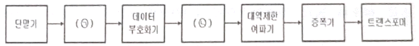
- ㉠ Scrambler, ㉡ 변조기
- ㉠ Scrambler, ㉡ 복조기
- ㉠ Descrambler, ㉡ 변조기
- ㉠ Descrambler, ㉡ 복조기
(정답률: 79%)
25. 4위상 PSK 변·복조기에서 변조속도가 2,400[baud]일 때 데이터 전송속도는?
- 9,600[bps]
- 4,800[bps]
- 2,400[bps]
- 1,200[bps]
(정답률: 73%)
26. Digital 회선망용 댁내/국내 회선 종단 장치라고 하며, 신호 변환기(DCE)의 장치인 것은?
- DSU
- MODEM
- CPU
- FEP
(정답률: 68%)
27. 서로 다른 네트워크 구조를 갖는 컴퓨터간 데이터를 송·수신할 경우, 이기종 간을 상호 접속하여 통신이 가능하도록 해주는 인터네트워킹 장비가 아닌 것은?
- Transceiver
- Repeater
- Hub
- Router
(정답률: 71%)
28. WAN, MAN, LAN 등의 서로 다른 네트워크 간에 통신하는 장치로 맞는 것은?
- 라우터
- 스위치
- 브리치
- 허브
(정답률: 74%)
29. 다음 중 네트워크에 연결된 기기에서 공격 신호를 탐지하여 자동으로 차단 조치를 취하는 보안 솔루션으로 비정상적인 이상신호를 발견시 능동적으로 조치를 취하는 시스템은?
- 침입 탐지 시스템(IDS)
- 방화벽(Firewall)
- 침입 방지 시스템(IPS)
- 가상사설망(VPN)
(정답률: 62%)
30. 전화 전송에 있어서 송화단의 전압과 수화단의 전압의 비가 100:1일 때 전송량은 얼마인가?
- 10[dB]
- 20[dB]
- 30[dB]
- 40[dB]
(정답률: 60%)
31. 교환기의 교환방식은 수동식과 자동식으로 구분된다. 다음 중 자동식 교환기가 아닌 것은?
- 기계식
- 전자교환식
- 광교환식
- 공전식
(정답률: 71%)
32. VolP 서비스를 위해서 일반 전화기와 직접 연결된 통신망이 인터넷과 연결되어야 하는데, 이 때 필요한 인터페이스 역할을 하는 장치는?
- PC
- 인텔리젠트 허브
- 스위치
- 게이트웨이
(정답률: 68%)
33. CATV의 구성을 센터계, 전송계, 단말계로 나눌 때 센터계 장치가 아닌 것은?
- 간선증폭기(Trunk Amplifier)
- 변복조기
- 채널 결합기(Combiner)
- CMTS(Cable Modem Termination System)
(정답률: 60%)
34. IPTV에서 특정 그룹 가입자에게 실시간 발송서비스를 가능하게 하는 네트워크 상의 패킷전송 기술은?
- Unicasting
- Broadcasting
- Multicasting
- Intercasting
(정답률: 58%)
35. 다음 중 정지 위성통신에 대한 설명으로 옳지 않은 것은?
- 통신 영역이 넓고, 안정적인 통신이 가능하다.
- 다중 접속(Multiple Access)이 가능하다.
- 방송에 이용시 난시청 지역을 해소 할 수 있다.
- 전파의 전송지연이 발생하지 않는다.
(정답률: 78%)
36. 다음 중 차세대 이동통신망의 특징이 아닌 것은?
- AllP
- All Optic
- BroadBand
- Low Speed Data
(정답률: 83%)
37. 다음 중 CDMA기반 이동통신망에서 Multi-path 페이딩을 방지하는데 가장 효율적인 것은?
- 레이크 수신기
- 헤테로다인 수신기
- 압신기
- 반전 및 사치
(정답률: 69%)
38. 멀티미디어용 디스크 어레이(Disk array)구현 방법 중 별도의 패리티 디스크를 사용하는 방식은?
- RAID-0
- RAID-1
- RAID-3
- RAID-5
(정답률: 69%)
39. 다음 중 유선기반의 홈네트워크 기술이 아닌 것은?
- Home PNA
- PLC(Power Line Communication)
- Ethernet
- Bluetooth
(정답률: 82%)
40. 멀티미디어 압축방식 중 동영상 압축 기술에 대한 표준규격은?
- TXT
- DOC
- JPEG
- MPEG
(정답률: 83%)
3과목: 정보전송개론
41. 다음 중 음성의 디지털 부호화 기술 중에서 파형 부호화 방식이 아닌 것은?
- LPC
- PCM
- DPCM
- DM
(정답률: 62%)
42. 표본화 주파수가 10[kHz]이고 원신호 파형의 주파수가 1[kHz]라면, 1주기당 PAM신호는 몇 개인가?
- 1개
- 2개
- 5개
- 10개
(정답률: 73%)
43. 8진 PSK(Phase Shift Keying)에서 반송파 간의 위상차는?
- 25도
- 45도
- 90도
- 125도
(정답률: 76%)
44. 다음 중 OFDM 방식을 사용하고 있지 않은 것은?
- 지상파 HDTV
- LTE 이동통신
- WiFi IEEE 802.11n
- 지상파 DMB
(정답률: 55%)
45. 다음 중 SONET의 설명으로 틀린 것은?
- SONET은 미국내 공업 표준을 마련하는 기구인 ANSI 산하 ECSA에 의해 마련된 광통신 전송 표준이다.
- SONET의 기본 전송단위인 STS-1은 90열 9행의 2차원 논리적 배열구조를 가지는 프레임이다.
- SONET은 ITU-T에서 국제표준으로 채택되었다.
- 전체 810바이트의 영역에서 36바이트는 프레임의 올바른 전송에 필요한 프로토콜 오버헤드로 이용된다.
(정답률: 59%)
46. 길이 500[m] 광섬유 4개를 융착접속하여 하나의 광섬유로 사용하고자 한다. 연결한 광섬유의 총 손실은 몇 [dB]인가? (단, 광섬유의 손실: 2[dB/km], 융착접속 손실: 0.1[dB])
- 2.3[dB]
- 2.4[dB]
- 4.3[dB]
- 4.4[dB]
(정답률: 72%)
47. 광섬유 기반의 광통신 시스템에서 전송 거리를 제한하는 가장 중요한 원인은 어느 것인가?
- 광 손실
- 광 분산
- 광 전반사
- 광 굴절
(정답률: 77%)
48. 지상마이크로파 설명으로 옳은 것은?
- 주로 단거리 통신서비스에 이용된다.
- TP케이블을 사용한다.
- 송수신 안테나 간의 조정이 필요하다.
- 주요 손실의 원인은 누화이다.
(정답률: 57%)
49. 다음 중 비동기 방식의 설명으로 틀린 것은?
- 정보의 송수신을 위해 사용되는 클럭이 상태측과 서로 독립적으로 운용된다.
- 송신할 정보가 있을 때 마다 정보의 시작, 정지를 수신측에 알려준다.
- 한 문자씩 전송한다.
- 한 비트씩 전송한다.
(정답률: 58%)
50. 다음 중 동기식 전송방식이 아닌 것은?
- Bit 동기방식
- Character 동기방식
- ATM 동기방식
- Frame 동기방식
(정답률: 61%)
51. 16진 QAM의 대역폭 효율은 얼마인가?
- 2[bps/Hz]
- 4[bps/Hz]
- 6[bps/Hz]
- 16[bps/Hz]
(정답률: 79%)
52. 브로드밴드 전송방식의 설명으로 다음 중 틀린 것은?
- 변조 기법을 통하여 신호의 주파수 대역을 옮겨서 전송한다.
- 광범위한 주파수 영역을 효과적으로 사용할 수 있다.
- 무선통신에서 주로 사용한다.
- 변조 방식에는 기저대역 신호에 반비례하여 변화시킨다.
(정답률: 59%)
53. OSI 7계층에서 암·복호화, 데이터 압축 등을 수행하는 계층은?
- 전송계층
- 세션계층
- 표현계층
- 응용계층
(정답률: 72%)
54. OSI 7계층에서 하위 3계층에서 발생한 데이터 분실 등의 오류를 회복시키는 계층은?
- 네트워크 계층
- 트랜스포트 계층
- 세션 계층
- 데이터링크 계층
(정답률: 63%)
55. OSI 7계층 참조모델 중 2계층 프로토콜에 해당하지 않는 것은?
- HDLC
- PPP
- SLIP
- SNMP
(정답률: 50%)
56. IPv6의 특징으로 틀린 것은?
- 헤더 정보가 IPv4보다 간단하다.
- IPv4보다 패킷 처리가 빨라졌다.
- Mobility 기능은 IPv4가 더 좋다.
- 멀티캐스트가 IPv4의 브로드캐스트 역할을 대신한다.
(정답률: 66%)
57. 어떤 PC의 네트워크 정보 중 IP주소와 마스크가 각각 다음과 같을 때, 이 PC가 연결되어 있는 서브네트워크 주소는? (단, IP Address: 45.23.21.8, Mask: 255.255.0.0이다.)
- 45.23.0.0
- 45.23.21.0
- 45.23.21.8
- 255.255.21.8
(정답률: 69%)
58. 물리적으로 동일한 네트워크에 연결되어 있지만 논리적으로 새로운 그룹을 만들어서 각각의 그룹 내에서만 통신이 가능하도록 구성되어 있는 것을 무엇이라 하는가?
- GSM
- VLAN
- GPRS
- DECT
(정답률: 75%)
59. 다음 중 에러정정이 가능한 방식은?
- 수직 패리티 체크방식
- 해밍(Hamming) 부호방식
- 그룹 계수 검사 방식(Group Count Check)
- 정마크 부호 검사 방식
(정답률: 73%)
60. 입력되는 정보 마지막에 1[bit]를 추가하여 추가된 Bit로 에러를 검사하는 것을 무엇이라고 하는가?
- ASCII
- Parity Check
- CRC
- ARQ
(정답률: 80%)
4과목: 전자계산기일반 및 정보설비기준
61. 이것은 CPU를 구성하는 하드웨어 중 명령어 실행에 반드시 필요한 핵심 모듈로서 명령어 파이프라인들로 이뤄진 슈퍼스칼라 모듈과 ALU 및 레지스터 집합 등을 의미하기도 한다. 최근 이와 같은 것을 하나의 칩에 여러 개 넣은 것들이 출시되고 있다. 여기서 ‘이것이’의미하는 것으로 옳은 것은?
- 스칼라
- 캐쉬(Cache)
- 파이프라인
- 코어(Core)
(정답률: 69%)
62. 다음 중 가상기억(Virtual Memory) 체계에 대한 설명으로 틀린 것은?
- 하드웨어에 의한 것이 아니라 소프트웨어에 의해 실현된다.
- 주기억장치와 보조 기억 장치가 계층 기억 체제를 이루고 있다.
- 컴퓨터의 속도를 개선하기 위한 방법이다.
- 컴퓨터의 기억 용량을 확장하기 위한 방법이다.
(정답률: 56%)
63. 디스크 시스템의 성능과 신뢰성을 향상시키기 위해서 디스크 드라이브의 배열을 구성하여 하나의 유니트로 패키지 함으로써 액세스 속도를 크게 향상시키고 신뢰도를 높인 것을 무엇이라 하는가?
- 자기 디스크 장치(Magnetic Disk Unit)
- RAID(Redundant Array of Inexpensive Disks)
- 자기 테이프 장치(Magnetic Tape Unit)
- 램 디스크 장치(RAM Disk Unit)
(정답률: 66%)
64. Shift register에 있는 이진수 number가 5번 Shift-left 되었을 때 결과값으로 알맞은 것은?
- number*5
- number/5
- number*32
- number/32
(정답률: 61%)
65. 다음 중 선점 스케줄링 방식에 대한 설명으로 틀린 것은?
- 빠른 응답을 요구하는 시분할 시스템에 적합하다.
- 우선순위가 높은 프로세스들이 빠르게 처리될 수 있다.
- 일단 프로세서를 할당 받으면 완료될 때까지 점유한다.
- 오버헤드가 발생한다.
(정답률: 53%)
66. 다음과 같은 운영체제의 운용 기법은?
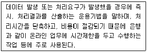
- 단일 사용자 시스템
- 실시간 처리 시스템
- 분산처리시스템
- 시분할 시스템
(정답률: 76%)
67. 다음은 CPU에 서비스를 받으려고 도착한 순서대로 프로세스와 그 서비스 시간을 나타낸다. FCFS(First Come First Served) CPU Scheduling에 의해서 프로세스를 처리한다고 했을 경우 프로세스의 평균 대기 시간은 얼마인가?
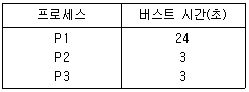
- 15초
- 16초
- 17초
- 18초
(정답률: 52%)
68. 다음 중 데드락(Deadlock)을 발생시키는 원인이 아닌 것은?
- 점유와 대기(Hold and Wait)
- 순환 대기(Circular Wait)
- 상호 배제(Mutual Exclusion)
- 선점 방식(Preemption)
(정답률: 63%)
69. 마이크로프로세서 병렬 처리에서 단계로써 맞는 것은 무엇인가?
- Fetch – Execute – Decode - Write
- Execute – Decode – Fetch - Write
- Fetch – Decode – Execute - Write
- Decode – Execute – Fetch – Write
(정답률: 59%)
70. 다음 중 어셈블리 명령어(MOV R0, R1)에 대한 설명으로 옳은 것은?
- 레지스터간 R0, R1 데이터의 덧셈 수행
- R0, R1을 스택에 저장
- R1을 R0 번지에 저장
- 레지스터 R1의 데이터를 R0로 이동
(정답률: 63%)
71. 과학기술정보통신부장관이 방송통신 기자재의 규격 등을 정확하게 적용하고 방송통신서비스의 품질을 확보하기 위하여 실시하는 기술지도 대상에 포함되지 않는 것은?
- 새로운 방송통신자재의 개발 및 채택·응용
- 방송통신기자재에 대한 기술표준의 적용
- 방송통신기자재에 대한 생산기술의 효율화
- 방송통신기자재의 기능 및 특성의 개선
(정답률: 52%)
72. 기간통신사업자가 국선수용단자반에 케이블로 접속·수용하여야 하는 최소 국선 수는?
- 5회선
- 8회선
- 10회선
- 13회선
(정답률: 72%)
73. 공동주택에 홈네트워크 설비를 설치하기 위한 공간으로 알맞지 않은 것은?
- 세대단자함 또는 세대통합관리반
- 통신배관실(TPS실)
- 집중구내통신설(MDF실)
- 공시청단자함
(정답률: 70%)
74. 방송통신발전기본법에 따른 방송통신설비의 기술기준 적합여부 조사·시험에 관한 설명이다. 괄호에 들어 갈 내용으로 맞는 것은?
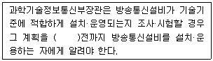
- 7일
- 10일
- 15일
- 25일
(정답률: 74%)
75. 인터넷에서 국제표준방식 또는 국가표준방식에 의하여 일정한 통신 규약에 따라 인터넷 프로토콜 주소를 사람이 기억하기 쉽도록 하기 위하여 만들어진 것을 무엇이라 하는가?
- 이터넷 네이밍(Naming)
- 트위터(Twitter)
- 도메인(Domain)
- 블로그(Blog)
(정답률: 79%)
76. 다음 중 전기통신사업법에서 정의하는 “보편적 역무”란?
- 전기통신사업법에 의한 허가 또는 등록이나 신고를 받거나 제공하는 전기통신역무를 말한다.
- 모든 이용자가 언제 어디서나 적절한 요금으로 제공 받을 수 있는 기본적인 전기통신역무를 말한다.
- 전기통신사업자와 이용자가 이용에 관한 계약을 체결한 전기통신역무를 말한다.
- 정부가 선정한 기간통신사업자가 제공하는 공중용 전기통신역무를 말한다.
(정답률: 69%)
77. 전기통신사업법에서 사용하는 용어에 대해 설명한 것이다. 괄호에 들어 갈 내용으로 맞게 나열된 것은?
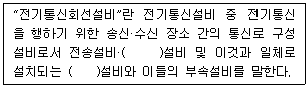
- 선로, 교환
- 전원, 교환
- 선로, 접지
- 전원, 접지
(정답률: 69%)
78. 다음 중 방송통신설비의 안정성·신뢰성 및 통신규약에 대한 기술 기준에 따른 통신국사 선정 조건으로 옳지 않은 것은?
- 임차 통신국사는 내진구조의 건축물을 선정한다.
- 사업자 공동사용이 가능한 조건이어야 한다.
- 지진대책 기준에 적합하여야 한다.
- 내화구조의 건축물을 선정한다.
(정답률: 67%)
79. 전기통신역무와 이를 이용하여 정보를 제공하거나 정보의 제공을 매개하는 것을 무엇이라 하는가?
- 정보보호산업
- 정보통신서비스
- 통신과금서비스
- 정보통신망 응용서비스
(정답률: 77%)
80. 방송통신설비의 기술기준에 관한 규정에 의거하여 50세대 이상 500세대 이하 단지 공동주택의 구내통신실면적확보 기준으로 알맞은 것은?
- 10제곱미터 이상으로 1개소
- 15제곱미터 이상으로 2개소
- 20제곱미터 이상으로 1개소
- 25제곱미터 이상으로 2개소
(정답률: 60%)